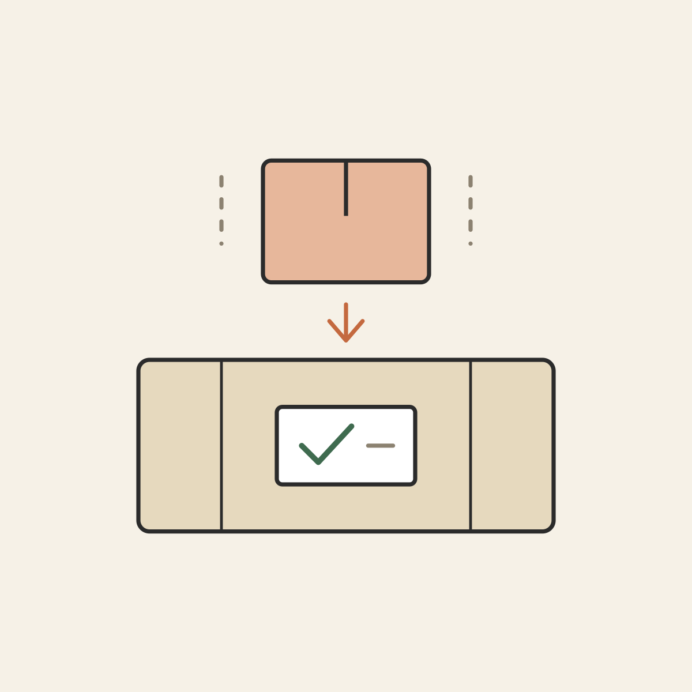
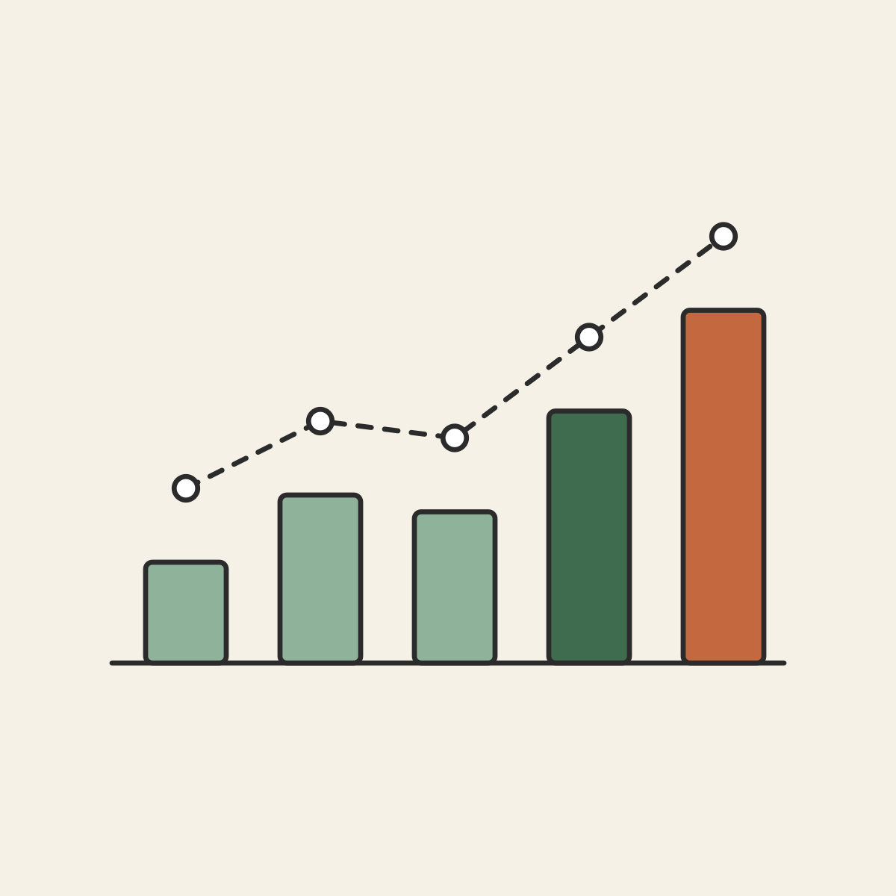

Smarter season management leading to better business decisions. Follow your crop from planting to financial statement.
Define your quarterly growing cycle (Quarter 1–4 of the year) and lock in your active production period.
Track incoming produce, crop varieties, quantities in bags or kg, and receive low-stock reorder alerts.
Generate clean digital invoices for buyers, configure tax and delivery terms, and trace paid vs. overdue amounts.
Turn seasonal transactions into verifiable financial statements ready for bank credit and buyer auditing.
Agriculture is dictated by cycles, not calendar months. June Harvest breaks your farming year into clear quarters (e.g. Quarter 1–2026, Quarter 2–2026).

Keep track of crops, seeds, and harvested produce on hand so you never undersell or lose track of stock reserves.
Issue professional invoices directly to buyers, complete with unit pricing in UGX, terms, and payment instructions.

Turn day-to-day farm outputs into consolidated performance reports. Export directly to Excel (CSV) or formal PDF documents.